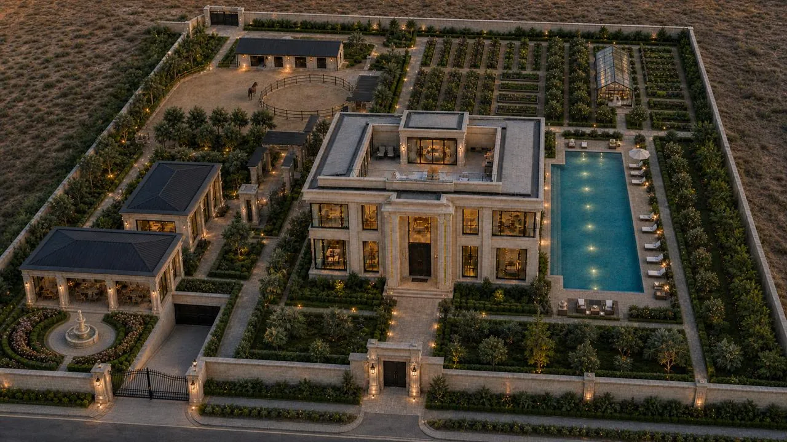

XUSUSIY REZIDENSIYA · 01
Hayotingizga
munosib makon.
Sokin bog‘lar, yorug‘ xonalar va o‘ylangan har bir detal. Ballet Residence bilan tanishing.
Xonalarni ko‘rish ↓BALLET RESIDENCE
Bir uy. Cheksiz taassurot.
UMUMIY BUDJETHisoblanadi
UMUMIY MUDDATRejalashtiriladi
MAKONLAR14 ta